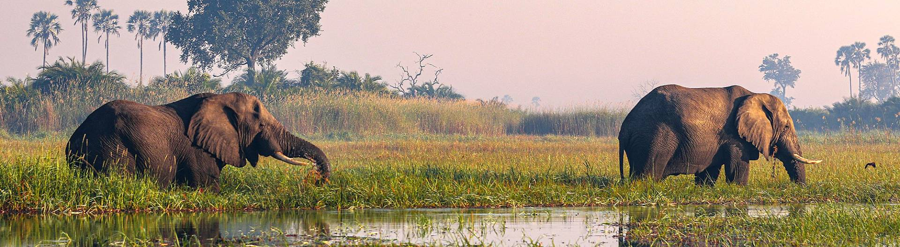
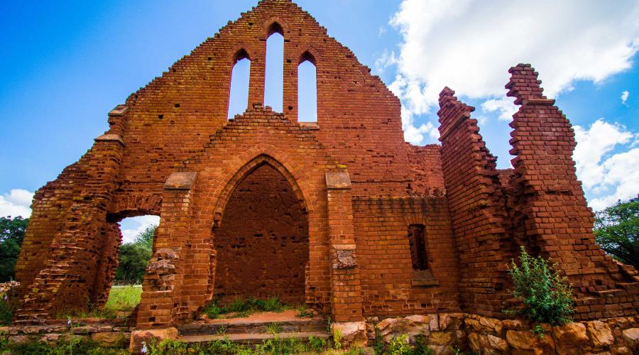

Destinations
From waterways and wildlife reserves to vast open landscapes, discover places that make Botswana special.

Okavango Delta
The Okavango Delta is known for its seasonal waterways, islands and rich wildlife. Visitors can explore the region through guided activities and nature-based experiences.
Good for: nature lovers, birdwatching and guided safari experiences.

Chobe National Park
Chobe is celebrated for its wildlife and the Chobe River area. Visitors may enjoy guided game drives, river cruises and photography opportunities.
Good for: wildlife viewing and photography.

Kalahari Desert
The vast Kalahari Desert features sweeping sandy landscapes, golden grasslands and unique wildlife. Visitors can experience the beauty of the desert, discover its diverse ecosystems and learn about the traditional cultures of communities living in the region..
Good for: wildlife viewing, landscape photography and wide spaces.

Palapye Ruins
Explore the historic ruins of Old Palapye, a former settlement established by the Bangwato people under Khama III in the late 19th century. Discover the remains of this historic settlement and learn about its importance in Botswana’s cultural heritage.
Good for: history, heritage exploration and cultural learning.